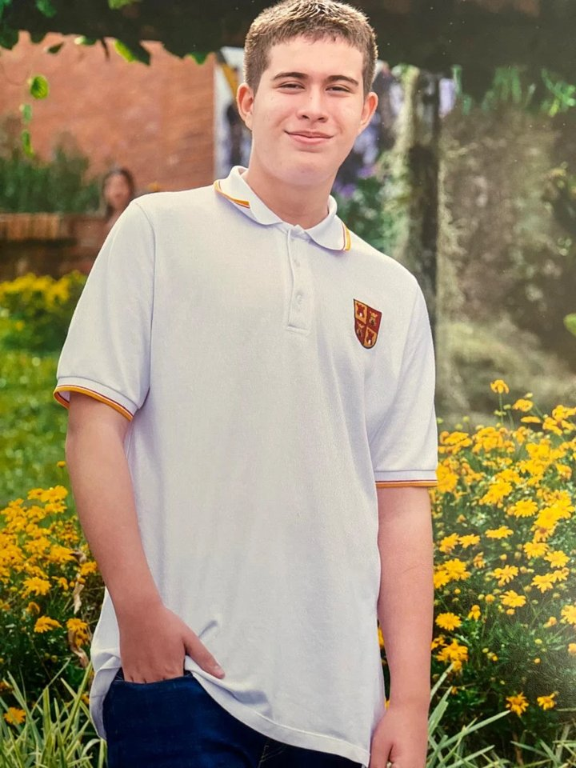
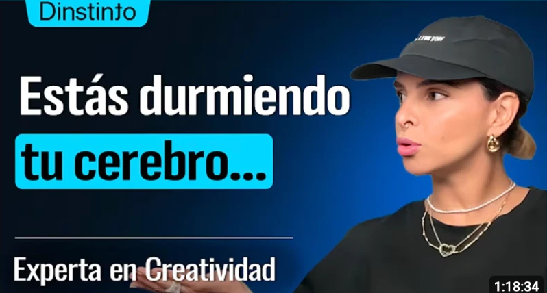

Boxeo
→ Disciplina y manejo del estrésMe ayuda a ser constante aunque no tenga ganas y a llegar con la cabeza despejada a estudiar o a trabajar en equipo, sin descargar la presión en los demás.
Juan David Escobar Guiral · Laboratorio de Ideas 1 · ESIC Business & Marketing School
Negocios Digitales y Administración
Lina Marcela Gallego Moreno
22 de octubre de 2026
Evidencia de la competenciaIdentifico la relación entre mi ejercicio de detección de oportunidades y lo que me apasiona con ética.
Autodiagnóstico inicial de la competencia. Lo compararé con el Test de Salida en la semana 8.

fortalezas según el Excel
áreas de mejora según el Excel
Saqué 77,78%. Es un buen punto de partida, pero no es mi techo. Este resultado me muestra que ya tengo una base para detectar oportunidades, y también que tengo cosas por fortalecer. Durante el núcleo me comprometo a:


Cada caída me enseñó algo que hoy uso para construir.
Me ayuda a ser constante aunque no tenga ganas y a llegar con la cabeza despejada a estudiar o a trabajar en equipo, sin descargar la presión en los demás.
Es mi forma de aprender por fuera del aula: escucho historias de emprendedores y creativos y llevo esas ideas a los trabajos de la U.
Emprender en salud y bienestar, usando la tecnología y la comprensión del comportamiento humano para mejorar la vida de las personas.
Explorar cómo herramientas digitales pueden ayudar a las personas a entrenar mejor, cuidarse y mantenerse saludables, por ejemplo en gimnasios, deportes como el boxeo o hábitos diarios.
Por qué me interesa«El deporte, sobre todo el boxeo, me dio disciplina y me ayuda a manejar el estrés, y quiero que más personas vivan eso. Además, la salud siempre ha estado presente en mi vida desde niño, y creo que la tecnología y la IA pueden hacer que cuidarse sea más fácil y accesible.»
Cumplo lo que prometo. Perder décimo me enseñó que nadie va a responder por mí.
Soy constante aunque no tenga ganas. El boxeo me lo recuerda en cada entrenamiento.
Trato bien a todas las personas, sin importar quiénes sean.
Me gano las cosas con mi trabajo, sin atajos.
Busco entender al otro antes de juzgarlo.
Me levanto después de cada caída y aprendo de ella.
De caer a construir: mi propósito es ayudar a las personas a vivir mejor.